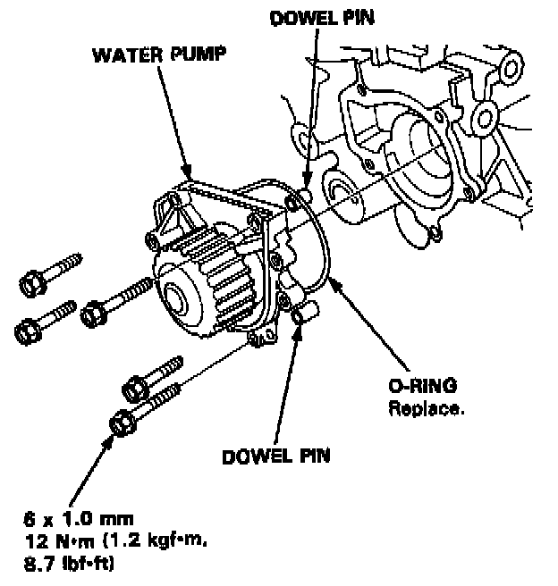

Operation CHARM
: Car repair manuals for everyone.
Home
>>
Acura
>>
1994
>>
Integra (GS-R) L4-1797cc 1.8L DOHC (VTEC)
>>
Repair and Diagnosis
>>
Engine, Cooling and Exhaust
>>
Engine
>>
Water Pump
>>
Specifications
Water Pump: Specifications
Illustrated Index:
Water Pump Replacement:
